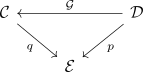
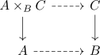

fiberwise criterion for existence of relative left adjoint for a locally cartesian fibration
Proposition
Let

be a diagram where $p$ and $q$ are locally cartesian fibrations.
TFAE:
- $\mathcal{G}$ admits a relative left adjoint
- the following conditions hold:
a) for each $E\in \mathcal{E}$ the functor $\mathcal{G}_{E}: \mathcal{C}_{E} \rightarrow \mathcal{D}_{E}$ admits a right adjoint b) $\mathcal{G}$ is a morphism of locally cartesian fibrations
Proof
1) $\implies$ 2)
2) $\implies$ 1)
